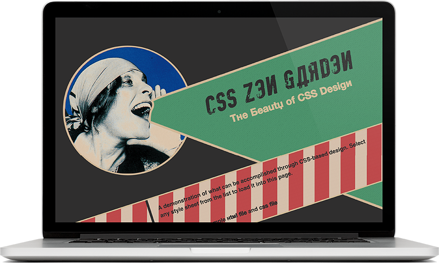

<div class="post-container">
	<div class="project">
		<h2>CSS ZEN GARDEN</h2>
		<h4>View <a href="http://stclair.design/css-zen-garden/">Live</a> or check it out on <a href="https://github.com/andreastclair/css-zen-garden">Github</a><h4>

		
		<h2>ABOUT THIS PROJECT</h2>
		<p>The Css Zen Garden is a challenge that has been around for a decade. (Happy birthday CSSZG!) In this challenge, designers download an HTML file and are instructed to use only the CSS to create a unique and original site.</p>
		<p>For my Zen Garden, I designed around the style of Russian Constructivism. I used CSS Animations and pseudu classes to create a site based on the propoganda posters of the time period.</p>
		<div class="list-container">
			<h4>Toolkit:</h4>
			<ul>
				<li>HTML</li>
				<li>CSS</li>
				<li>CSS Animations</li>
				<li>Pseudo Classes</li>
				<li>Responsive Web Design</li>
				<li>Research</li>
				<li>Working with restrictions</li>
			</ul>
		</div>	
		
		
		


		<!-- 
		 -->

	</div>	
</div>
	
	<!-- {% for project in site.pages %}
		<a href="{{project.url}}">{{project.item-title}}</a>
		
	{% endfor %}	 -->
	<!-- {{content}} -->


